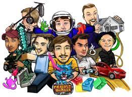

Who Is Mr. Beast?
At 24 years old, Jimmy Donaldson, also known as MrBeast, is one of the most-viewed and highest-paid creators on YouTube.
His early viral videos included challenging feats like reading every word in the dictionary or counting from zero to 100,000 for 40 straight hours.
Lately, he's become known for his stunt philanthropy, giving away money or committing acts of kindness and filming them for content. Recently, Donaldson uploaded a video "curing" 1,000 people's blindness by paying for eye surgeries.
His ambitious challenges and money giveaways have helped him grow his channel to roughly 131 million subscribers, the most in YouTube's history.